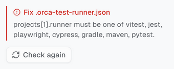

Test Runner for Orca
An Orca plugin that runs your workspace's tests from the right sidebar.
When an agent finishes a turn, it re-runs the tests related to what the agent changed. A failure goes back to that agent in one click, as a single line with a command to reproduce it, or on its own if you turn that on.
- Vitest, Jest, Playwright, Cypress, Gradle, Maven and pytest, found on their own
- Monorepos: one project per package and runner
- Flaky tests are re-run and marked, not sent to the agent
- New failures are marked, so you can tell what the last change broke
- The result is in Orca's status bar; pressing it runs the tests
- English and Korean, following Orca's language

Install
In Orca, open Settings → Plugins, search for Test Runner and install it. Or from a terminal:
orca plugin install h00ns/test-runner-for-orcaOrca lists the access the plugin asks for before it runs. Then open the Test Runner tab in the right sidebar. It needs Orca 1.4.260 or later.
Set it up with your agent
Test Runner finds most projects on its own. If yours needs a config file, or you want one your team can commit, paste this into an agent in the workspace. It writes .orca-test-runner.json and checks that each suite runs. The panel picks the file up the next time it opens, or when you press Check again.
Set up Test Runner for Orca in this repository by writing .orca-test-runner.json at the repository root.
1. Find every test suite: Vitest, Jest, Playwright, Cypress, Gradle, Maven or pytest. Look at every package.json (workspace packages too) and its test scripts, the runners' config files, build.gradle(.kts), pom.xml and pyproject.toml.
2. Add one entry to "projects" per suite, with "name", "root" (its folder relative to the repository root; leave it out for the root) and "runner" (vitest, jest, playwright, cypress, gradle, maven or pytest).
3. Add "args" only when the suite needs them, such as a config file, taken from how its test script runs it. Never add reporter, output file, watch or coverage options: Test Runner adds its own. Add "env" only for variables the tests need.
4. Set "autoRun": false for slow suites: browser tests (Playwright, Cypress) and tests that need a running server or database.
5. Start the file with "$schema": "https://raw.githubusercontent.com/h00ns/test-runner-for-orca/main/schema/orca-test-runner.schema.json" and keep it valid JSON, without comments.
6. Run each suite once with its runner and those args to check they work. Then tell me what you set up, and anything you left out and why.Supported runners
| Runner | Found from | After an agent finishes | Re-run failed |
|---|---|---|---|
| Vitest | vitest in package.json, vitest.config.* | related tests | files |
| Jest | jest in package.json, jest.config.* | related tests | files |
| Playwright | @playwright/test, playwright.config.* | off by default | files |
| Cypress | cypress, cypress.config.* | off by default | files |
| Gradle | build.gradle(.kts), settings.gradle(.kts) | whole suite | whole suite |
| Maven | pom.xml | whole suite | whole suite |
| pytest | pytest.ini, [tool.pytest…] in pyproject.toml, conftest.py | whole suite | files |
JS runners start from their own package, so npm, pnpm and yarn all work. Jest runs with --forceExit, so a test that leaves a server open does not hold the run. Coverage is turned off, so coverage thresholds do not fail a run of part of the suite. Gradle and Maven use ./gradlew and ./mvnw when the project has them; pytest uses .venv or venv. Their results come from the JUnit XML reports they write.
Playwright 1.49 hangs on Node 24 even outside Orca; 1.65 works.
After an agent finishes
- Orca reports that an agent in a workspace finished a turn.
- If the code is the same as at the last run, compared by content and not just
git status, nothing runs. - Otherwise, the files changed since that run pick the tests. Vitest and Jest run only the tests that import them; other runners run their suite when their folder changed. Browser tests are left out unless the configuration opts them in. The first automatic run in a workspace, a deleted or renamed file, or a folder outside git runs everything instead.
- A run that covers part of the suite keeps the earlier results for the rest, so a failure it did not re-run is still shown.
- Failures are re-run once. Those that pass are marked flaky. The rest are compared with the run before, and those that were passing are marked new.
- A notification says when tests start failing, and when they pass again.
Sending failures back
Ask agent to fix types a failure into the workspace's idle agent. Fix new only and Ask agent to fix all send several at once. If no agent is open, the one chosen in settings is started with the failure. An agent that is working, or waiting for permission, is never typed into.
The agent receives one line:
The test "cart › applies the coupon once" in apps/web/src/cart.test.ts:42 is failing. Error: AssertionError: expected 8000 to be 9000 … Reproduce with: cd apps/web && npx vitest run src/cart.test.ts -t "applies the coupon once" Fix the code (or the test, if the test itself is wrong) and re-run it until it passes.With Send new failures back to the agent on, this happens by itself after each automatic run: the failures the agent's turns caused go back to the agent that just finished, which fixes them and triggers the next run. It stops after the number of rounds in settings (3 by default) and tells you. It skips a turn you interrupted, never types into another agent, and never starts one.
Monorepos
Test Runner reads pnpm-workspace.yaml or the workspaces field of package.json and makes one project per package and runner. A root that only installs the runner for its packages runs nothing itself. A root with its own configuration, such as a Vitest workspace or Jest projects, runs its packages for them. The panel can run one project at a time.
Configuration
Your agent can write it for you. Detection covers most repositories. For the rest, add .orca-test-runner.json to the workspace root and commit it, so your team shares it.
{
"$schema": "https://raw.githubusercontent.com/h00ns/test-runner-for-orca/main/schema/orca-test-runner.schema.json",
"autoRunScope": "related",
"env": { "TZ": "UTC" },
"projects": [
{ "name": "web", "root": "apps/web", "runner": "vitest", "args": ["--config", "vitest.unit.config.ts"] },
{ "name": "api", "root": "services/api", "runner": "gradle" },
{ "name": "e2e", "root": "apps/web", "runner": "playwright", "autoRun": false }
]
}| Key | Meaning |
|---|---|
projects | The projects to run, instead of detecting them. Each has a root folder (default: the workspace root), and optionally runner (detected when left out), name, args added to the runner's command, env, and autoRun (default: true, false for browser tests). |
ignore | Folders to leave out of detection, when projects is not given. |
autoRunScope | related or all: what runs after an agent finishes, for this workspace. |
env | Environment variables for every project. |
If the file has a problem, the panel says what and where.
Settings
Settings → Plugins → Test Runner.
| Setting | Default |
|---|---|
| Run tests when an agent finishes | on |
| What runs after an agent finishes | related tests |
| Re-run failures once to catch flaky tests | on |
| Send new failures back to the agent automatically | off |
| Rounds before automatic sending stops | 3 |
| Notify after automatic runs | on |
| Agent to start, when you ask for a fix and none is open | Claude Code |
| Timeout per project | 10 minutes |
Screens
Every image is the real panel, drawn by Orca.



Access
Test Runner is a full-access (trusted-worker) plugin, because it starts your test runners as processes. Orca asks you to approve once that it may:
- read workspaces, their terminals and agent status
- open files in an editor tab and focus terminals
- type into agent terminals and start agents: when you press a button, or with automatic sending on
- show notifications and a status bar item
- keep its own storage (the last run per workspace) and settings
It makes no network requests and collects no data.
Limitations
- Local workspaces only. SSH workspaces need a way for plugins to run processes on the remote host, which Orca does not offer yet.
- Open file opens the file at the top: Orca's API cannot open a file at a line yet.
- Only Vitest and Jest pick related tests. Other runners run their whole suite.
Found a problem, or a runner it should support? Open an issue.